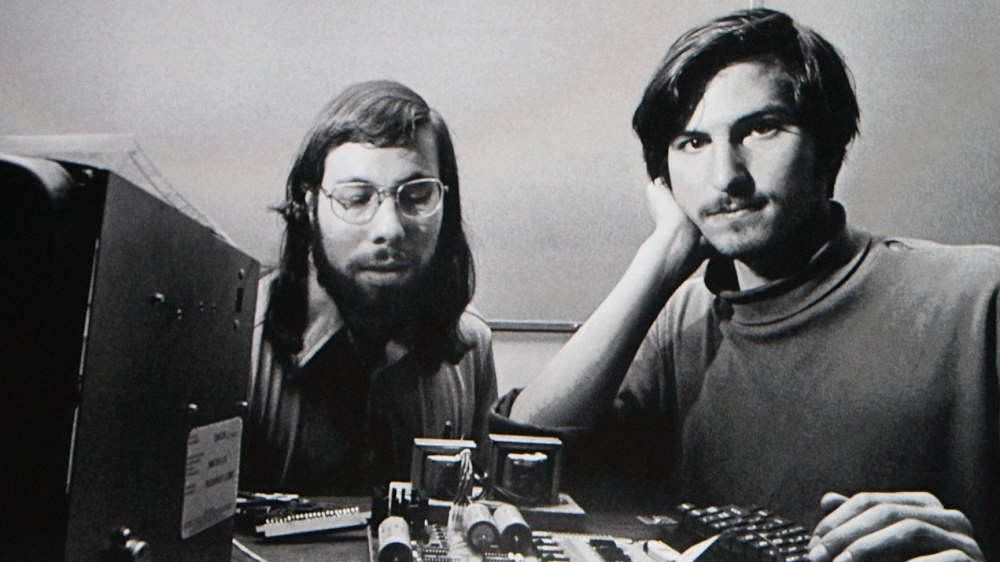
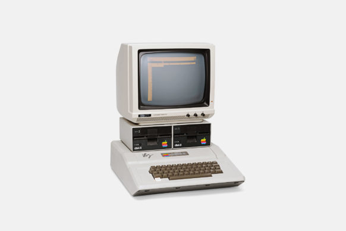
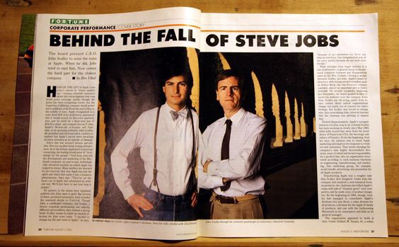
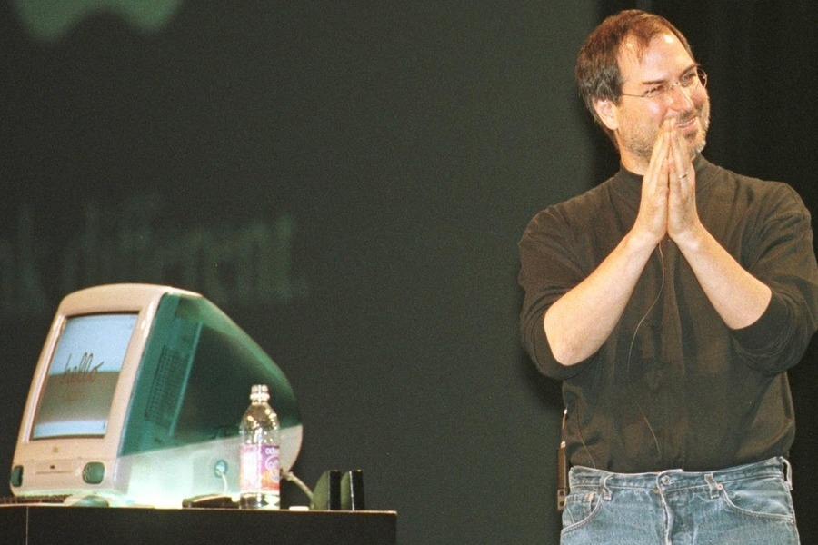

1976
Creation of Apple as Apple Computer Company in Los Altos, CA by Steve Jobs and Steve Wozniak. There were personal computers, but they were not common. The two college dropouts dreamed of making computers small enough for personal use.
1978
Steve and Steve created the Apple II, and the company went public! Sales soared and Apple Computing Company had made a name for itself. Business was booming.
1978-1997
Apple experienced a rough few years. There were errors in product designs, rounds of layoffs, and corporate strategies kept changing. Steve Jobs left the company.
Late 1990's
The computer industry as a whole was tanking. The Microsoft corporation was their main competitor and had a better reputation at the time. Due to the turmoil within the company, Apple's reputation was not great.
1997
Steve Jobs is rehired as interim CEO and him and Jony Ive start a new project to resurrect the company’s reputation: the iMac G3 - accessible for all at home. People were getting sick of not being able to take their computers home, and also they did not like the boring beige, scary-looking computers. Beyond bettering Apple's reputation, the main point of the iMac was to make home computers more accessible, and by doing so, the goal was for the iMac to be very affordable.
1998
Steve Jobs at the unveiling of the iMac! Prefix “i” in iMac was the first (iPad, iPhone). The iMac was all the rage! ...... but it was $1199, which would be $2041.87 today.
Soon After 1998
The point of the iMac was to 1. Be more accessible and 2. Save Apple’s reputation. They ended up not compromising on quality in order to meet society's expectation, so the iMac was much more expensive to make than they had hoped. Therefore, the iMac was not as accessible as they wanted it to be, as only the middle and upper classes could afford them.
2002
iMac G3 is discontinued as the needs of society kept evolving. The crowds were excited at first, and then bored as the “new” became the “norm” they wanted even faster, even quieter, even prettier technology.
Modern Day

Modern technologies are still not accessible to everyone in all social classes. The iPhone 13 Pro, for example, starts at $999. The reason for this gap is due to both societies' constant pressures for newer and better products, as well as the new technologies constantly changing the human perception of what “new and shiny” even is, which demonstrates the actor-network theory.
Conclusion
The iMac G3 demostrates the actor-network theory, which goes against the idea that tech influences society OR that society influences tech. Rather, it states that society and technology both interact in a web, constantly influencing each other. In the case of the iMac, people expected the comapny to produce a certain standard of quality because that is what they were used to based on previous technology. Technology and society together influenced the iMac to be too expensive for everyone to afford,
Top of Page